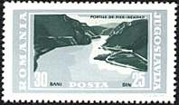
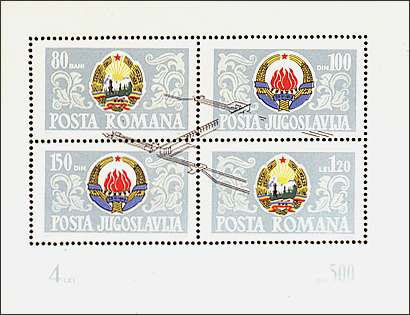
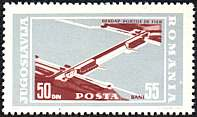

Joint Issue Romania - Yugoslavia
The
fashion of joint issues is rolling over the philatelic world. Each month a
new joint issue sees the light and nothing seems to stop this trend.
Sometimes the "pressure" is so high, that two joint issues are
brought practically in the same time, like the recent Belgium's joint issues
with Morocco (6/10/01) and with China (6/12/01). Some political agenda of
governments is often behind this trend, and one can only wonder why there
are so many joint issues with the Big Brother Continental China and so few
(actually no one I'm aware of) with the prosperous and quite free Small
Brother Taiwan.
There is a precursor of these issues, mostly ignored, one
that was 36 years ago also a part of the political agenda of two neighbors,
Romania and Yugoslavia. This page is dedicated to their joint issue of 1965,
brought simultaneously on Mai 20 in both countries.
The two stamps and the sheet are classified by
Scott as Romania 1475 - 1747, Yugoslavia Scott No. 769 - 771 and by Michel
as Rumänien 2405-2406 + Block 60, Jugoslawien 1116-1117 + Block 10.
The print run of the sheet was of only 189,661 pieces, quite low for two
countries numbering together at that time over 42 millions citizens. The
stamps were designed by the Yugoslavian artist B. Lasarevic, the sheet being
designed by the Romanian artist E. Palade. The whole issue was printed by
the Romanian governmental printing office (Fabrica de timbre). The stamps
are perforated 12.5 x 12, the sheet 13.5 x 13.
 |
 |
 |
 |
The both stamps (above, on
the left) show the Iron Gate (Portile de Fier in Romanian, Derdap in
Serbian) hydroelectric plant and dam on the Danube. The sheet (above, on the
right) displays the arms of Romania and Yugoslavia and a sketch of the dam
that symbolically joins both countries, separated by the Danube river.
What makes this issue so special is the fact that each
stamp has its face value expressed as much in the Romanian currency (one Leu,
several Lei and Bani; 1 Leu = 100 Bani) as in the Yugoslavian one (Dinar).
Just to mention that Leu means Lion and Bani means Money. One of the stamps
display the values 30b - 25d and the other 50d - 55b. The first is labeled
Portile de Fier - Derdap and the second Derdap - Portile de Fier. The
stamps display the names of both countries, Romania and Jugoslavija
and the word Posta (post).
The value of the sheet is shown at the bottom of it, as 4
Lei and 500 Dinar. The stamps of the sheet aren't "joined",
because there are two labeled Posta Romana, having values of 80 Bani and of
1.20 Lei and other two labeled Posta Jugoslavija, showing values of 100
Dinar and 150 Dinar.
What makes this issue especially interesting is
the fact that the stamps and the sheet as a whole were postally valid in both
countries. The sheet was also valid in both countries, but each country's
post offices rather cancelled its own stamps on the sheet.
In my own classification of joint issues, the stamps and
the sheet of the presented issue are placed on the second rang worldwide,
after the perfect joint issue of Switzerland and Liechtenstein, appeared on
the 5th of September 1995 (see the link below).
The stamps were issued as result of a better relationship between both countries, after the long years when Yugoslavia was isolated by the other countries found behind the Iron Curtain (Romania being a part of them). In 1965 died the long time dictator of Romania, the Secretary of the Romanian Communist Party Gheorghe Gheorghiu-Dej (shown above on a stamp issued in 1966). As well he as his now famous, but actually less bloody successor, Nicolae Ceausescu, like any convinced communist (or nazi) ruler, wanted to start a new grandiose project and has chosen one on the Danube, also in order to make forgotten the previous failure of the Danube - Black Sea canal (see the link below). The project largely profited by the Western credits and technology. Today, after so many years, the history will be repeated: it is again with Western credits and technology (especially from Switzerland) that the hydroelectric plant from Portile de Fier - Derdap will be reconditioned.
Because the Yugoslav currency, connected at that time to the Western currencies, was much stronger than the Romanian one, there was an important speculative movement of sheets from Romania toward Yugoslavia, driven by the Romanian "dealers". For this reason the value of the sheet raised for a certain time in Romania from 4 Lei to about 15 - 20 Lei (about US$ 3 officially, $ 1.0 to 1.5 on the Romanian black market of those years). Just to mention that in Mai 2001 I could buy the same sheet, shown above, at its official price of Lei 7000, i.e. about $ 0.27. Sic transit gloria stampi!
Links:
Click the above banner to visit the site